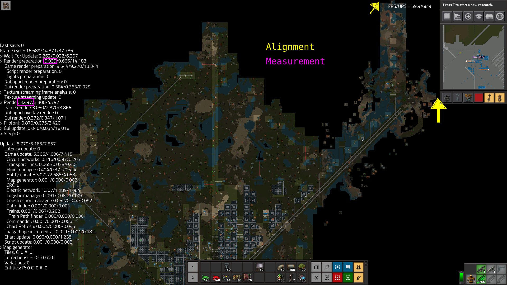
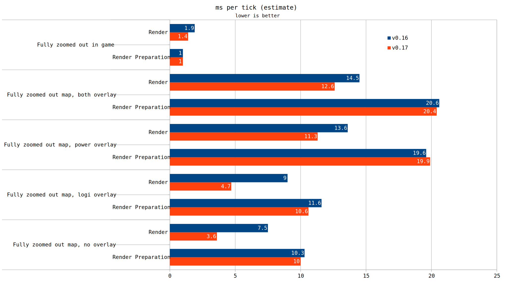
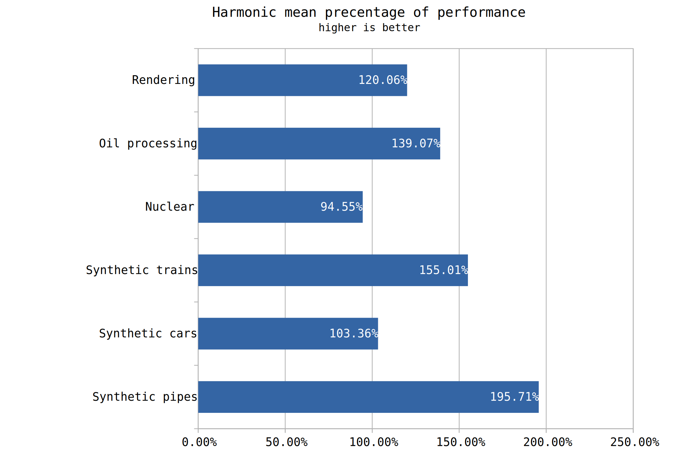

The overall performance generally improved, however there are still many cases to test, as well as a few situations where performance regressed.
The Factorio 0.17 update brought with it numerous changes that could affect performance. One of the biggest changes was the handling of fluid. Now, each pipe group has its fluid processed by an independent thread, potentially lifting that work off the main thread.
Since so many things changed, not everything can be reasonably compared between 0.16 and 0.17. It would be best to categorize potential tests into one of several categories.
An example test of our first category is a train travelling between stations A and B. In both relevant versions of Factorio, none of the mechanics governing train transport have fundamentally changed. The mass of train rolling stock, and the top speed/acceleration remains the same. It is the most comparable comparison.
The next test group is where numbers accessible via modding have changed. Such an example is where the crafting speed of chemical plants was changed from 1.25 to 1. Since we can mod this value back to the 0.16 value, it is a reasonably comparable test.
The third category is for changes which cannot be reverted with mods. One such example is the change in item spacing on belts. The distance between items on a belt is apparently hard coded deep within the game's engine, and the value is not modifiable by mods. This means any test containing belts should be taken with a degree of salt.
The final category is where you don't attempt to make the test cases exactly similar. For example, this could be a bot based red science build. Since the craft time for plates changed from 3.5s to 3.2s, you might be able to design something requiring fewer furnaces. Another case would be maintaining the exact same layout but profiting off the greater idle time on the furnaces. Tests in this category would vary greatly on their comparability. 1k SPM in 0.16 looks very different than 1k SPM in 0.17, yet the same amount of apparent work is being performed.
In this initial round of tests, we aim to focus on the first two categories. We will produce several test cases that fall into one of these two categories.
The first test case is to test pipes independently of any other factor. We will produce two primary scenarios, each consisting of 131072 pipes per map. There will be two configurations/layouts of pipe. First, there will be the case where every single pipe is not connected to any other. This achieves 131072 pipes in 131072 pipe groups. According to information mentioned by the developers, this should spawn just as many threads as pipes. If we assume that each thread has a little bit of overhead, we would expect this to perform worse.
The other permutation to this test case is to connect 512 pipes at a time into 256 pipe groups. As 512*256 = 131072, we can easily confirm the same quantity of pipes exist here. For the sake of this test we will arrange our pipes in a line. A grid arrangement could yield a different performance characteristic, but that shall be left to a future test.
For this case, we will test with the pipes completely empty, as well as a situation where each pipe contains exactly 50 water.
The next case to test is one where we have ~90k cars. These cars can either be intersecting with each other or spread out. There is very little to this test as the cars are fully stationary. Thus, we expect there to be little to no performance difference.
A further area of much interest is nuclear. As far as I know, no fundamental changes occurred to nuclear power mechanics. It also heavily uses the fluid system so any performance delta would be interesting to see.
There are a wide variety of nuclear designs, and it's simply not viable to test them all. This test will focus on 4 specific designs. We will test a 2xN nuclear setup, a 2x2 reactor setup, another 2x2 reactor setup (shared steam), and a reactor setup where nuclear reactors are used to transfer heat instead of heat pipes.
For each reactor, we will scale the power demand to approximately 60GW. This value is roughly the amount of power consumed by /u/schaev's 10K SPM rotationally symmetric base. It therefore serves as a good benchmark amount of power generation.
It isn't completely viable to describe each nuclear design here, but if you download the maps you can check them out. The key difference between the designs is this: the 2xN uses 42 turbines on one fluid group, the 2x2 has 2 turbines per fluid group, the 2x2 shared steam uses 21 turbines in a fluid group, and the reactor conducting once again uses 2 turbines per fluid group.
A further test case is that of oil processing. We can mod the oil recipe changes back to the values found in 0.16 with ease, thus this case is viable. For the sake of laziness, we will lift the maps directly from test-000003. To recap, this design takes water and raw oil, and cracks all products to produce plastic. Plastic is directly voided, and coal directly created from infinity chests. There are two maps here, one featuring offshore pumps directly in, and another where there are a couple fluid groups fed by as few offshores as would be required.
Due to the nature of the fluid groupings in this case, this test is extremely interesting. Presently, oil production is ideal to create directly on a large lake to achieve offshore directness. Theoretically, threaded pipes should lift that limitation.
The next test case is one provided by /u/Allaizn. He created a setup featuring dense trains, traveling around in a rectangle with many stations. Essentially this case serves as a test of train movement and collision checks. There is both cardinal movement and non-cardinal.
The final case of this test is that of rendering. The game received a new rendering system, so we should expect a performance increase. Due to finite time (or being distracted playing 0.17), this test case was tested in 0.17.1, rather than the 0.17.7 of the other cases. It doesn't help that every time a developer sneezes a new point release occurs.
This render test features my 0.15-0.16 map. Since so many recipes changed for 0.17, science was turned off and a long time was spent waiting for every buffer to fill. Once production ceased only then did render testing occur. The two most relevant statistics related to rendering presented in the time usage screen are render preparation and render.
For rendering, what you are looking at has a huge affect to how much it costs. The most expensive thing to render (at least the one I'm annoyed most by), is the map. Specifically, the map when the power and logistic overlays are active. There are no biters or pollution in the map (anymore) so unfortunately that render overlay could not be tested as well.
We will take our map and zoom out fully. We also align the map so that the top of the revealed area is at the edge of the screen, same for the east side and minimap. An example picture of the exact render config. 
We will test with no overlays active, the logistic overlay active, the power overlay active, and both overlays active. The values reported by time usage fluctuate a bit, so the most common subjective reading will be recorded. The --benchmark-graphics command switch has been added for 0.17 but since it is not present in 0.16 this subjective measurement method will be used. Decoratives, smoke, and clouds have been switched off in the game options.
Finally we will test the render fully zoomed out (but not on the map). The tile-grid and show-wakeup-lists debug options were left enabled (the game looks funky with these off).
Additionally, for all the test cases except the render test, AssemblyStorm was kind enough to run benchmarks. His test system consists of an i3-8100 and 2x4GB of DDR4-3866MHz. This system should be substantially faster in terms of memory than my typically used system, whereas CPU performance should be lower.
With the first set of cases, there are incredible gains, but also regressions.
Simply working our way down the graph, we first encounter the oil processing to plastic case. This case saw big improvements, and we also saw determined that using offshores directly in is still beneficial, albeit much more slightly. Keep in mind that due to the recipe changes these tests were conducted with a simple mod that reverted the relevant ones.
Next up we find the nuclear disappointment. The fastest nuclear design was still the fastest, but performance for it regressed, by the most of any nuclear design tested. Every reactor except the one sharing steam in the 2x2 config regressed performance wise. It's clear that solar is still the way to go.
The next case is Allaizn's dense train test. There is a clear and present performance improvement, likely due to his fixes to the sin/cos functions, used when a train is in an orientation other than 0.
The cars case is indeed a curious one. Performance was shown to improve in AssemblyStorm's dataset, yet in my case the spread out cars actually regressed performance wise. Some pure speculation on why that might be the case is as follows: His system would be around 4x as much memory performance. If the cost to access and process various chunks went up in 0.17, in terms of memory utilization, then the cost increase could be explained. A dedicated test exploring this kind of thing will be conducted in the future.
The final subset contains the synthetic pipe tests. It's immediately clear that empty pipes are virtually free in the typical case. Only when 1 pipe per pipe group is setup do you see overhead related to threading. One thing unanswered by this data is if an empty pipe with the filter set is as cheap. Since fluid mixing was removed, 1 fluid per pipe is enforced, this test setup doesn't capture a pipe group locked into a single fluid. If a filtered but empty pipe is just as cheap, then all oil designs as we know them are obsolete.
The render based tests show good improvements to render overhead. You still won't be able to get 60 FPS on a fully zoomed out map, overlays on, in the late game, but the overall improvements are nice to see. Notably nearly all the gains seem to be localized within the render subsection, rather than render preparation. In hindsight it would have been good to record data of the gui subsection as well, considering the massive rewrite. Perhaps when the gui is finalized I will return to do it.
As an aggregate, the harmonic mean of each percentage based performance delta was taken. Given the small number of designs tested in the vast expanse of all possible designs, this chart should be taken with a degree of salt.
Nuclear is still bad, and got worse. Nearly everything else tested is better. Considering the relevance of solar, I can't be too upset. I intend to retest every single one of my tests, which will take some time, especially as I have to mod revert stuff for a couple of them. That should provide a more complete picture of performance as it relates to 0.17.